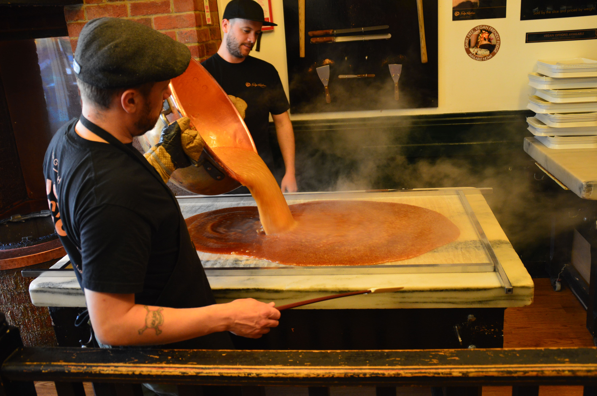
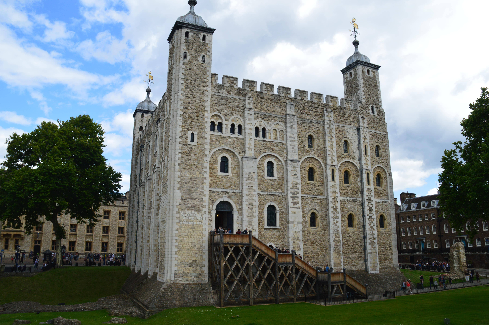
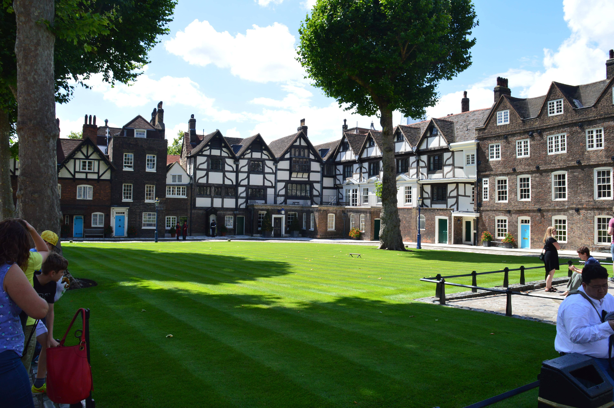

England
Die erste gemeinsame Reise - Seite 2
Cambridge sollte sicher zum schönsten Aufenthalt entwickeln, da die Stadt genau das war, was wir am meisten suchten. Viele alte, aber erhaltene Gebäude, wenig Hochhäuser und viel Grün, welches sich durch die ganze Stadt zog. Auch wenn viele Touristen unterwegs waren, vor allem asiatische Reisegruppen, welche in großen Gruppen und verschiedenen Cappygruppenfarben von Ort zu Ort fuhren, fanden wir viele ruhige Plätze in den Parks um die ganzen prächtigen Colleges.
Zugegeben, wir verbrachten die Tage dann auch hauptsächlich in der Sonne und besuchten genauso die Colleges. An einer Stelle fanden wir einen sogar einen Speisesaal wie aus „Harry Potter“ und einen Fudge Laden, in dem wir beim Herstellungsprozess zusehen durften.
Wir fühlten uns in eine andere Zeit versetzt und werden auf jeden Fall noch einmal wiederkommen. Bedauerlicherweise waren wir nämlich nur für eine Nacht in Cambridge, um am Tag darauf weiter Richtung London zu fahren. Viel können wir zu Cambridge deshalb nicht erzählen, außer dass es wirklich schön war, da auch das Wetter mit strahlendem Sonnenschein auf unserer Seite war.Letzter Halt, London. Die Hauptstadt Englands empfing uns mit einem bewölkten Himmel, doch dieser sollte in den folgenden Tagen auch wieder aufklaren. London war für uns ein recht typischer Touristenbesuch mit zwei kleinen Ausnahmen, einerseits dem Besuch einer alten Klassenkameradin und dem Besuch bei meinem Bruder und seiner (jetzt) Frau. Unser AirBnb lag dieses Mal etwas weiter außerhalb, doch mit der U-Bahn kommt man in London glücklicherweise überall schnell hin.
Diese Unterkunft war etwas besonders, da die einzelnen Zimmer innerhalb einer Wohnung gebucht wurden, was dazu führte, dass man alleine in der Wohnung immer andere Leute getroffen und Stimmen gehört hat. Da es das erste Mal für meine Freundin in London war, entschieden wir uns die obligatorischen Touristenorte anzufahren.Madame Tussauds, Big Ben, Westminster Abbey, das Harrods und der Tower of London waren nur wenige der weltbekannten Schauplätze, die London zu bieten hat. Was auch für mich das erste Mal war, war eine Fahrt auf dem London Eye, welche wir für unsere Reise geschenkt bekommen hatten. Schon mit der Einstellung für die nächsten drei Stunden VOR dem London Eye zu warten wurden wir mit einer für uns festgelegten Zeit überrascht, zu welcher wir wiederkommen sollten.
 Gesagt, getan und schon warteten wir nur noch etwa 20 Minuten, bevor wir unsere Fahrt antreten durften. Im Allgemeinen begegnete London wie nunmal eine solche Metropole ist, voll mit Menschen, Touristen und Trubel. Doch auch London gibt einem viele Ruhige und besondere Momente, in denen man sich in der Geschichte der Stadt und im britischen Flair verliert. Die Freundlichkeit der Menschen ist in ganz England einfach überraschend und zieht einen einfach in seinen Bann. Ich persönlich bin gerne in England, auch wenn ich vor jeder Reise aufs Neue mein Englisch wieder ein bisschen auffrischen muss.